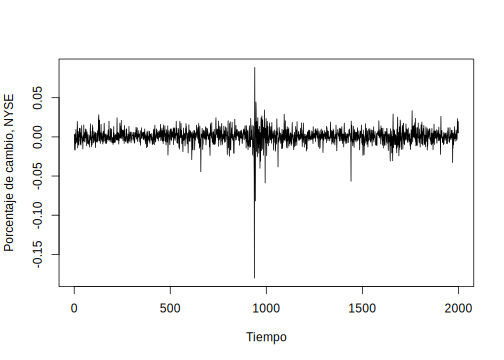
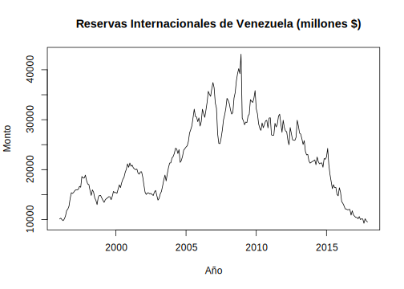
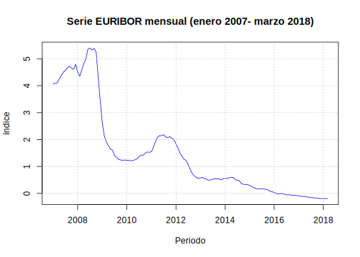
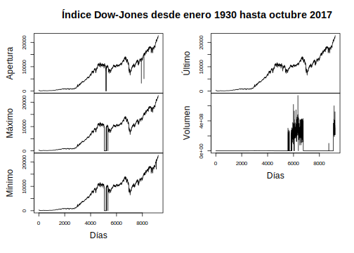
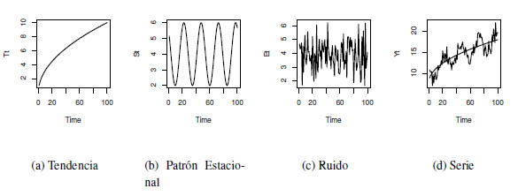
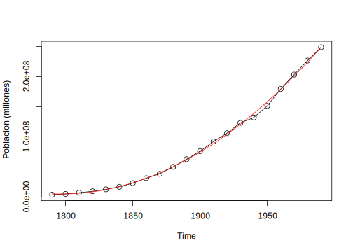
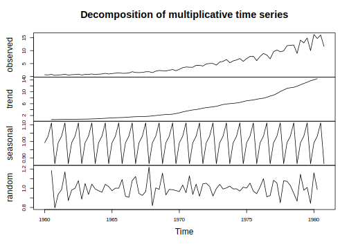
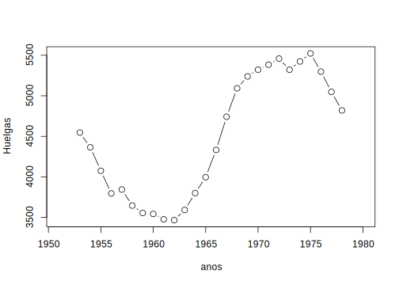
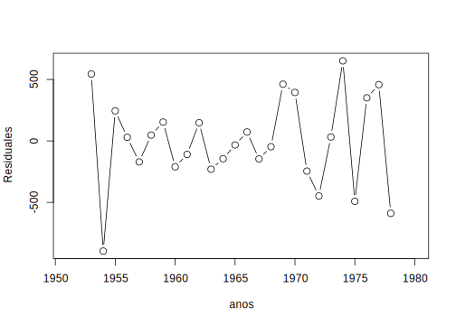

Capítulo 1 Introducción
Las series de tiempo ya han desempeñado un papel importante en las primeras ciencias naturales. La astronomía babilónica utilizó series de tiempo de las posiciones relativas de estrellas y planetas para predecir eventos astronómicos. Las observaciones de los movimientos de los planetas formaron la base de las leyes que Johannes Kepler descubrió. El análisis de las series de tiempo ayuda a detectar las regularidades en las observaciones de una variable y a derivar “leyes” de ellas, y/o explotar toda la información incluida en esta variable para predecir mejor los desarrollos futuros. La idea metodológica básica detrás de estos procedimientos, que también eran válidos para los babilonios, es que es posible descomponer series de tiempos en un número finito de componentes independientes pero no directamente observables que se desarrollan regularmente y que por lo tanto pueden ser calculados de antemano. Para este procedimiento es necesario que existan diferentes factores independientes que incidan en la variable. A mediados del siglo XIX, este enfoque metodológico de la astronomía fue asumido por los economistas Charles Babbage y William Stanley Jevons. La descomposición en componentes no observados que dependen de diferentes factores causales, como suele emplearse en el análisis clásico de series de tiempo, fue desarrollada por Warren M. Persons (1919). Distinguía cuatro componentes diferentes:
Desarrollo a largo plazo, tendencia,
Componente cíclico con períodos de más de un año, el ciclo económico,
Componente que contiene los altibajos dentro de un año, el ciclo estacional, y
Componente que contiene todos los movimientos que no pertenecen ni a la tendencia ni al ciclo económico ni al componente estacional, el residual.
Suponiendo que los diferentes factores no observables son independientes, su recubrimiento aditivo genera las series de tiempo que, sin embargo, sólo podemos observar en su conjunto. Para obtener información sobre el proceso de generación de datos, tenemos que hacer suposiciones sobre sus componentes no observados. El análisis clásico de series de tiempo supone que los componentes sistemáticos, es decir, la tendencia, el ciclo económico y el ciclo estacional, no están influenciados por perturbaciones estocásticas y, por lo tanto, pueden representarse mediante funciones determinísticas del tiempo. El impacto estocástico se limita a los residuos, que, por otra parte, no contienen movimientos sistemáticos. Por lo tanto, se modela como una serie de variables aleatorias independientes o no correlacionadas con esperanza cero y varianza constante, es decir, como un proceso aleatorio puro.
Este enfoque cambió desde la presentación de los trabajos de George E. P. Box and Gwilym M. Jenkins, “Time Series Analysis: Forecasting and Control”, en los años 70 del siglo pasado. Se abandonaron los procedimientos puramente descriptivos del análisis clásico de series de tiempo y, en su lugar, se han utilizado los resultados y métodos de la teoría de la probabilidad y las estadísticas matemáticas. Desde ese entonces, el análisis de series ha tenido un desarrollo creciente. Se han presentado una gran variedad de libros sobre este tópico, cada uno de ellos influenciado principalmente por la orientación de las series que se discuten en sus contenidos. Una gran parte de la literatura está dirigida a exponer los aspectos teóricos alrededor de las series de tiempo, siendo en muchos casos, rigurosamente desarrollados y descritos, sin embargo poco de ellos presentan implementaciones de las técnicas estudiadas y su compresión en ejemplos reales lo que a veces puede dificultar su comprensión en especial para aquellos que no posean una apropiada formación matemática.
Los primeros intentos de estudiar el comportamiento de las series de tiempo financieras fueron realizados por profesionales financieros y periodistas en lugar de por académicos. De hecho, esto parece haberse convertido en una tradición de larga data, ya que, incluso hoy en día, gran parte de la investigación y el desarrollo empíricos todavía se originan en la propia industria financiera. Esto puede explicarse por el carácter práctico de los problemas, la necesidad de datos especializados y las posibles ventajas de dicho análisis. El primer y más conocido ejemplo de la investigación publicada sobre series de tiempo financieras es el legendario Charles Dow, como se expresa en sus editoriales en el Wall Street Times entre 1900 y 1902. Estos escritos formaron la base de la “teoría del Dow” e influyeron en lo que más tarde se conoció como análisis técnico y carisma. Aunque Dow no coleccionó y publicó sus editoriales por separado, esto fue hecho póstumamente por su seguidor Samuel Nelson (Nelson, 1902). Las ideas originales de Dow fueron posteriormente interpretadas y ampliadas por Hamilton (1922) y Rhea (1932). Estas ideas gozaron de cierto reconocimiento entre los académicos de la época: por ejemplo, Hamilton fue elegido miembro de la Royal Statistical Society.
Aunque Dow y sus seguidores discutieron muchas de las ideas que encontramos en el análisis moderno de finanzas y series de tiempo, incluyendo estacionalidad, eficiencia del mercado, correlación entre rendimiento de activos e índices, diversificación e imprevisibilidad, no hicieron ningún esfuerzo serio para adoptar métodos estadísticos formales. La mayor parte del análisis empírico consistió en la interpretación minuciosa de gráficos detallados de las medias bursátiles sectoriales, formando así los famosos índices Dow-Jones. Se argumentó que estos índices descuentan toda la información necesaria y proporcionan el mejor pronóstico de eventos futuros. Una idea fundamental, muy relevante para la teoría de los ciclos de Stanley Jevons y la metodología de descomposición de tendencias de la “curva Harvard A-B-C” de Warren Persons, fue que las variaciones de precios del mercado consistían en tres movimientos primarios: diarios, a medio y largo plazo.
La investigación empírica más temprana que utiliza métodos estadísticos formales se remonta a los documentos de Working (1934), Cowles (1933,1944) y Cowles and Jones (1937). El trabajo centró la atención en una característica previamente señalada de los precios de las materias primas y las acciones: que se asemejan a la acumulación de cambios puramente aleatorios. Alfred Cowles 3rd, analista financiero cuantitativamente entrenado y fundador de Econometric Society and the Cowles Foundation, investigó la habilidad de los analistas de mercado y servicios financieros para predecir los futuros cambios de precios, encontrando que había pocas pruebas de que pudieran hacerlo. Cowles y Jones reportaron evidencia de correlación positiva entre sucesivas variaciones de precios, pero, como posteriormente Cowles (1960) comentó, esto fue probablemente debido a que tomaron promedios mensuales de precios diarios o semanales antes de computar los cambios: un fenómeno de “correlación espuria”, analizado por Working (1960).
La previsibilidad de los cambios de precios se ha convertido desde entonces en un tema importante de la investigación financiera, pero, sorprendentemente, poco más se publicó hasta el estudio de Kendall (1953), en el que encontró que los cambios semanales en una amplia variedad de precios financieros no podían predecirse ni a partir de los cambios pasados en las series ni a partir de los cambios pasados en otras series de precios. Este parece haber sido el primer informe explícito de esta propiedad de los precios financieros a menudo citada, aunque la investigación sobre la previsibilidad de los precios sólo se vio impulsada por la publicación de los documentos de Roberts (1959) y Osborne (1959). El primero presenta un argumento en gran medida heurístico sobre por qué las sucesivas variaciones de precios deben ser independientes, mientras que el segundo desarrolla la proposición de que no se trata de cambios absolutos de precios, sino de cambios logarítmicos de precios independientes entre sí. Con la suposición auxiliar de que las propias modificaciones se distribuyen normalmente, esto implica que los precios se generan como movimiento Browniano.
El análisis de series de tiempo desempeña un papel importante en el análisis requerido para el pronóstico de eventos futuros. Existen varias formas o métodos de calcular cual va a ser la tendencia del comportamiento del proceso en estudio.
Un pronóstico es una predicción de algún evento o eventos futuros. Como sugirió Neils Bohr, hacer buenas predicciones no siempre es fácil. Los pronósticos famosamente “malos” incluyen lo siguiente del libro “Malas Predicciones”:
“La población es de tamaño constante y se mantendrá hasta el fin de la humanidad.” La Enciclopedia, 1756.
“1930 será un espléndido año de empleo.” Departamento de Trabajo de los EE. UU., pronóstico de Año Nuevo en 1929, justo antes de que el mercado se desplomara el 29 de octubre.
“Las computadoras se multiplican a un ritmo rápido. Para el cambio de siglo habrá 220,000 en los EE. UU.” Wall Street Journal, 1966.
Algunos ejemplos donde se puede utilizar y hacer precciones con series de tiempo:
Dirección de Operaciones. Las organizaciones empresariales utilizan habitualmente las previsiones de ventas de productos o la demanda de servicios para programar la producción, controlar los inventarios, gestionar la cadena de suministro, determinar las necesidades de personal y planificar la capacidad. Las previsiones también pueden utilizarse para determinar la combinación de productos o servicios que deben ofrecerse y las ubicaciones en las que deben fabricarse los productos.
Marketing. La previsión es importante en muchas decisiones de marketing. Las previsiones de respuesta de las ventas a los gastos publicitarios, las nuevas romociones o los cambios en las políticas de precios permiten a las empresas evaluar su eficacia, determinar si se están alcanzando los objetivos y realizar ajustes.
Finanzas y Gestión de Riesgos. Los inversores en activos financieros están interesados en pronosticar los rendimientos de sus inversiones. Estos activos incluyen, pero no se limitan a acciones, bonos y materias primas; otras decisiones de inversión se pueden tomar en relación con las previsiones de tasas de interés, opciones y tipos de cambio. La gestión del riesgo financiero requiere previsiones de la volatilidad de la rentabilidad de los activos para que se puedan evaluar y asegurar los riesgos asociados a las carteras de inversión, y para que los derivados financieros puedan cotizarse adecuadamente.
Economía. Los gobiernos, las instituciones financieras y las organizaciones de política requieren pronósticos de las principales variables económicas, como el producto interno bruto, el crecimiento demográfico, el desempleo, las tasas de interés, la inflación, el crecimiento del empleo, la producción y el consumo. Estas previsiones son parte integrante de la orientación de la política monetaria y fiscal, así como de los planes y decisiones presupuestarias adoptadas por los gobiernos. También son fundamentales en las decisiones de planificación estratégica tomadas por organizaciones empresariales e instituciones financieras.
Control de Procesos Industriales. Las previsiones de los valores futuros de las características de calidad crítica de un proceso de producción pueden ayudar a determinar cuándo deben cambiarse las variables controlables importantes del proceso, o si el proceso debe detenerse y revisarse. Los esquemas de retroalimentación y control feedforward son ampliamente utilizados en el monitoreo y ajuste de procesos industriales, y las predicciones de la producción del proceso son una parte integral de estos esquemas.
Demografía. Las previsiones de población por país y región se realizan de manera rutinaria, a menudo estratificadas por variables como el género, la edad y la raza. Los demógrafos también pronostican nacimientos, muertes y patrones migratorios de las poblaciones. Los gobiernos utilizan estas previsiones para planificar políticas y acciones de servicio social, como el gasto en atención médica, programas de jubilación y programas de lucha contra la pobreza. Muchas empresas utilizan pronósticos de poblaciones por grupos de edad para hacer planes estratégicos en relación con el desarrollo de nuevas líneas de productos o tipos de servicios que será ofrecido.
1.1 Conceptos básicos
Una serie tiempo es una secuencia de observaciones, medidos en determinados momentos del tiempo, ordenados cronológicamente y, espaciados entre sí de manera uniforme, así los datos usualmente son dependientes entre sí. El principal objetivo de una serie de tiempo es su análisis para hacer pronóstico. Formalmente se tiene la siguiente definición.
Definición 1.1 Una serie de tiempo es un conjunto de observaciones \(x_t\), cada una registrada a un tiempo específico \(t\).
A continuación presentaremos una serie de ejemplos que demuestran la utilidad y lo cotidiano de las series de tiempo, también se mostrarán los códigos en R para cargar los archivos de datos y graficar las respectivas series de tiempo.
1.2 Ejemplos
Ejemplo 1.1 Beneficios de acciones. Beneficios por acción trimestrales para la compañía Johnson & Johnson. Se tienen 84 trimestres iniciando el primer trimestre de 1960 hasta el último trimestre de 1980. Los métodos para analizar tales datos se verán en el Tema 3 usando técnicas de regresión. El archivo es “jj.txt”.
Los comandos en R para cargar el archivo y graficar la serie de tiempo son los siguientes:jj=ts(scan("data/jj.txt"),start=1960,freq=4)
plot(jj, type="l",ylab="Beneficios por acción trimestrales")
#library(readxl)
reservas <- read_excel("data/ReservasInternacionales.xlsx")
reservas=ts(reservas,start = 1996,frequency = 12)
plot.ts(reservas[,2], xlab="Año",ylab="Monto",
main="Reservas Internacionales de Venezuela (millones $)")
# library(readxl)
petroleo <- read_excel("data/PreciosPetroleoVzla.xlsx")
petroleo=ts(petroleo,start = 2006,frequency = 12)
plot.ts(petroleo[,2], xlab="Año",ylab="Monto",
main="Precio promedio del petróleo venezolano (en dolares $)")
DJ=read_excel("data/IndiceDowJones.xlsx")
DJ=ts(DJ)
plot.ts(DJ[,-1], xlab="Días",
main="Índice Dow-Jones desde enero 1930 hasta octubre 2017")
NYSE=ts(scan("data/nyse.txt"))
plot(NYSE,xlab="Tiempo",ylab="Porcentaje de cambio, NYSE")1.2.1 Clasificación de las series de tiempo
Como se ha mostrado en los ejemplos anteriores, hay una amplia variedad de series de tiempo que pueden clasificarse en varias categorías desde varios puntos de vista.
Series de tiempo continuas y discretas. Los datos registrados continuamente, por ejemplo, por un dispositivo analógico, se denominan series de tiempo continuas. Por otra parte, los datos observados en ciertos intervalos de tiempo, como la presión atmosférica medida cada hora, se denominan series de tiempo discretas. Existen dos tipos de series de tiempo discretas: una en la que las observaciones de los datos se realizan a intervalos de igual espaciamiento y otra en la que las observaciones de los datos se realizan a intervalos de espaciamiento desigual. Aunque las series de tiempo mostradas en los ejemplos anteriores están conectadas continuamente por líneas sólidas, todas ellas son series de tiempo discretas. A partir de ahora en este libro, consideramos sólo discretas series de tiempo grabadas a intervalos igualmente espaciados, porque las series de tiempo que analizamos en ordenadores digitales son generalmente series de tiempo discretas.
Series de tiempo univariadas y multivariadas. Las series de tiempo que consisten en una sola observación en cada punto temporal, como se muestran en los ejemplos 1.1, 1.2, 1.3 y 1.5, se denominan series de tiempo univariadas. Por otra parte, las series de tiempo que se obtienen grabando simultáneamente dos o más fenómenos como los ilustrados en el ejemplo 1.4 se denominan series de tiempo multivariadas. Sin embargo, puede ser difícil distinguir entre series de tiempo univariadas y multivariadas desde su naturaleza; más bien, la distinción se hace desde el punto de vista del analista y por varios otros factores, como la restricción de la medición y los conocimientos empíricos o teóricos sobre el tema. Desde el punto de vista del modelado estadístico, la selección de variables en sí misma es un problema importante en el análisis de series de tiempo.
Series de tiempo estacionarias y no estacionarias. Una serie de tiempo es un registro de un fenómeno que varía irregularmente con el tiempo. En el análisis de series de tiempo, las series de tiempo de variación irregular se expresan generalmente mediante modelos estocásticos. En algunos casos, un fenómeno aleatorio puede ser considerado como la realización de un modelo estocástico con una estructura de variación temporal. Estas series de tiempo se denominan series de tiempo estacinarias. El ejemplo 1.5 es un ejemplo típico de una serie de tiempo estacionaria. Por otra parte, si la estructura estocástica de una serie de tiempo cambia con el tiempo, se denomina serie de tiempo no estacionaria. Como ejemplos típicos de series de tiempo no estacionarias, considere la serie en los ejemplos 1.1 a 1.4 . Se puede observar que los valores medios cambian a lo largo del tiempo.
Series de tiempo gaussianas y no gaussianas. Cuando una distribución de una serie de tiempo sigue una distribución normal, la serie de tiempo se denomina serie de tiempo gaussiana; de lo contrario, se denomina serie de tiempo no gausiana. La mayoría de los modelos considerados en este libro son modelos gaussianos, asumiendo que las series de tiempo siguen distribuciones gaussianas. Al igual que en el caso del ejemplo 1.3, el patrón de las series de tiempo es a veces asimétrico, de modo que la distribución marginal no puede considerarse gaussiana. Incluso en tal situación, podemos obtener una serie de tiempo gaussiana aproximada mediante una transformación de datos apropiada.
Series de tiempo lineales y no lineales. Una serie de tiempo expresable como la salida de un modelo lineal se denomina serie de tiempo lineal. Por el contrario, la salida de un modelo no lineal se denomina serie de tiempo no lineal.
Datos faltantes y valores atípicos. En el modelado de series de tiempo de problemas del mundo real, a veces necesitamos tratar con observaciones faltante y valores atípicos. Algunos valores de las series de tiempo que no se han registrado por algunas razones se denominan observaciones que faltan en las series de tiempo. Los valores atípicos (observaciones exteriores) pueden ocurrir debido al comportamiento extraordinario del objeto, mal funcionamiento del dispositivo de observación o errores en el registro. En los datos de los ejemplos 1.4 y 1.5 se pueden observar datos atípicos. En el ejemplo 1.4 podemos notar caídas en los índices del DowJones y en el ejemplo 1.4 podemos notar una fuerte caída en el porcentaje de cambio de diario ocurrido el 19 de octubre de 1987.
1.3 Componentes de una serie de tiempo
El análisis clásico de las series de tiempo se basa en la suposición de que los valores que toma la variable de observación es la consecuencia de tres componentes, cuya actuación conjunta da como resultado los valores medidos, estos componentes son:
Componente de tendencia. Se puede definir como un cambio a largo plazo que se produce en la relación al nivel medio, o el cambio a largo plazo de la media. La tendencia se identifica con un movimiento suave de la serie a largo plazo.
Componente estacional. Muchas series de tiempo presentan cierta periodicidad o dicho de otro modo, variación de cierto período (semestral, mensual, etc.). Por ejemplo las Ventas al Detalle en Puerto Rico aumentan por los meses de noviembre y diciembre por las festividades navideñas. Estos efectos son fáciles de entender y se pueden medir explícitamente o incluso se pueden eliminar de la serie de datos, a este proceso se le llama desestacionalización de la serie.
Componente aleatoria. Esta componente no responde a ningún patrón de comportamiento, sino que es el resultado de factores fortuitos o aleatorios que inciden de forma aislada en una serie de tiempo.
De los tres componentes anteriores los dos primeros son componentes determinísticos, mientras que la última es aleatoria.
Los modelos que se utilizan con más frecuencia son:
Modelo aditivo: \(X_t=T_t+E_t+\epsilon_t\)
Modelos multiplicativos:
Puro: \(X_t = T_t\times E_t\times\epsilon_t\)
Mixto: \(X_t = T_t\times E_t+\epsilon_t\)
La elección de uno de estos modelos se hará de manera que el modelo seleccionado sea capaz de agrupar las principales características observadas en el gráfico de la serie en estudio.
1.3.1 El Modelo Aditivo de Componentes de Series de Tiempo
Dada una serie \(X_t, t=1,\ldots,n\), el Modelo Aditivo de Componentes consiste en asumir que \(X_t\) se puede descomponer en tres componentes: \[\begin{equation} X_t = T_t+E_t+\epsilon_t \tag{1.1} \end{equation}\]donde \(T_t\) es la componente de tendencia, \(E_t\) es la componente estacional y \(\epsilon_t\) es la componente aleatoria o de errores. Las componentes \(T_t\) y \(E_t\) son funciones de \(t\) determinísticas. Su evolución es perfectamente predecible.
Este modelo es apropiado cuando la magnitud de la fluctuaciones estacionales de la serie no varía al hacerlo la tendencia.
La componente \(T_t\) en algunos casos también puede ser una componente estacional, pero de baja frecuencia, o, equivalentemente, una componente con período muy grande. Por ejemplo, en una serie diaria, \(E_t\) puede tener período 30 días, y \(T_t\) período 360 días.
En la Figura se muestra la idea de la descomposición. Al superponer las series en los gráficos (a), (b) y (c) se obtiene la serie en el gráfico (d).

Asumiendo el modelo aditivo, el análisis de series de tiempo consiste en modelar y estimar \(T_t\) y \(E_t\) y luego extraerlas de \(X_t\) para obtener \(\hat{\epsilon}_t = X_t - \hat{T}_t - \hat{E}_t\). La serie \(\hat{\epsilon}_t\) se modela y estima para finalmente reconstruír \(X_t\), \(\hat{X}_t = \hat{T}_t+\hat{E}_t+\hat{\epsilon}_t\), y poder realizar el pronóstico \(\hat{X}_{t+h}=\hat{T}_{t+h}+\hat{E}_{t+h}+\hat{\epsilon}_{t+h}\), utilizando la información disponible \(X_t,\ldots,X_n\) con \(h=1,2,\ldots,m\). Sin embargo, puede suceder que la serie \(\hat{\epsilon}_t\) sea incorrelacionada, es decir, \(Corr(\hat{\epsilon}_t,\hat{\epsilon}_{t+s}) = 0\), para \(s\neq0\). En este caso \(\hat{\epsilon}_{t+h}=0\) para todo \(h>0\).
1.3.2 El Modelo Multiplicativo de Componentes de Series de Tiempo
Dada una serie de tiempo \(X_t,t=1,\ldots,n\), el Modelo Multiplicativo de Componentes consiste en asumir que \(X_t\) se puede descomponer de una de las siguientes maneras:
- Puro: \[\begin{equation} X_t = T_t\times E_t\times\epsilon_t \tag{1.2} \end{equation}\]
- Mixto: \[\begin{equation} X_t = T_t\times E_t+\epsilon_t \tag{1.3} \end{equation}\]
donde \(T_t\) es la componente de tendencia, \(E_t\) es la componente estacional y \(\epsilon_t\) es la componente aleatoria o de errores. Estos modelos son apropiados cuando la magnitud de las fluctuaciones estacionales de la serie crece y decrece proporcionalmente con los crecimientos y decrecimientos de la tendencia respectivamente.
A continuación presentamos una lista de posibles modelos para la tendencia \(T_t\):
- Lineal \[\begin{equation} T_t=\beta_0+\beta_1t \tag{1.4} \end{equation}\]
- Cuadrático \[\begin{equation} T_t=\beta_0+\beta_1t+\beta_2t^2 \tag{1.5} \end{equation}\]
- Cúbico \[\begin{equation} T_t=\beta_0+\beta_1t+\beta_2t^2+\beta_3t^3 \tag{1.6} \end{equation}\]
- Exponencial \[\begin{equation} T_t=\exp(\beta_0+\beta_1t) \tag{1.7} \end{equation}\]
- Logístico \[\begin{equation} T_t=\frac{\beta_2}{1+\beta_1\exp(-\beta_0t)} \tag{1.8} \end{equation}\]
En la tendencia cuadrática podemos observar:
- Si \(\beta_1,\beta_2>0\), \(T_t\) es monótona creciente.
- Si \(\beta_1,\beta_2<0\), \(T_t\) es monótona decreciente.
- Si \(\beta_1>0\) y \(\beta_2<0\), \(T_t\) es cóncava.
- Si \(\beta_1<0\) y \(\beta_2>0\), \(T_t\) es convexa.
Corresponde a un modelo con tendencia lineal para el logaritmo de \(X_t\). En (1.9) al tomar exponencial se tiene \(X_t = \exp(\beta_0+\beta_1t + \epsilon_t)\), que es similar al modelo con tendencia exponencial (1.7). Sin embargo, son modelos diferentes y se estiman por métodos diferentes.
1.4 Estimación de la Tendencia
En esta sección introducimos la estimación de la tendencia mediante modelos de regresión lineal y no lineal. Son modelos paramétricos. También introduciremos modelos no paramétricos para estimar la tendencia, como los suavizadores, los filtros lineales y no lineales y las medias móviles. Hay otros métodos que no consideraremos en este curso, por ejemplo, wavelets. En ocasiones la expresión “suavizar una serie” es equivalente a “extracción de la tendencia de una serie”, y ambas equivalen a la estimación de la tendencia.
Para la estimación de los parámetros \(\beta_0,\beta_1,\beta_2\) en los modelos lineales (1.4), (1.5), (1.6) y (1.9) utilizaremos el método de mínimos cuadrados clásico (MCC). En este método los parámetros estimados son aquellos que producen el valor mínimo de la suma de errores cuadrados. Para los modelos (1.7) y (1.8) se usa el método de mínimos cuadrados no lineales, que también minimiza la suma de errores cuadrados.
El modelo Log-Lineal (1.9) es equivalente, algebráicamente, a \[X_t = \exp(\beta_0 + \beta_1t + \epsilon_t).\] Sin embargo, este último modelo es no lineal y no coincide con el modelo exponencial,(1.7), \(X_t = \exp(\beta_0+\beta_1t)+\epsilon_t\). Es posible estimar por mínimos cuadrados ordinarios el modelo Log-Lineal y utilizar los parámetros estimados \(\hat{\beta}_0,\hat{\beta}_1\) como valores iniciales en la estimación del modelo exponencial por mínimos cuadrados no lineales. Pero los parámetros estimados en ambos modelos no necesariamente coinciden.
Aunque la serie tenga una componente estacional \(E_t\), \(X_t = T_t + E_t + \epsilon_t\), solamente consideramos un modelo de regresión entre \(X_t\) y \(T_t\), tal que \(X_t = T_t + \eta_t\), donde \(\eta_t\) es el término de error, de forma que \(\eta_t=E_t+\epsilon_t\). Por ejemplo,
- En el caso lineal \(T_t = \beta_0 + \beta_1t\), ajustamos el modelo de regresión lineal: \(X_t = \beta_0 + \beta_1t + \eta_t\).
- En el caso cuadrático \(T_t = \beta_0 +\beta_1t+\beta_2t^2\), ajustamos el modelo de regresión cuadrático \(X_t = \beta_0+\beta_1t+\beta_2t^2 +\eta_t\). Nótese que en este caso hay que definir una variable explicativa adicional \(t^2\).
En general, para que datos de series de tiempo sean estacionarias, es necesario hacer un promedio de productos en el tiempo. Como para datos de serie de tiempo es importante medir la dependencia entre los valores de la serie; al menos, debemos ser capaces de estimar las autocorrelaciones con precisión. Será difícil medir la dependencia de estos valores si la estructura de dependencia no es regular o si cambia en el tiempo. De ahí, que para realizar cualquier análisis estadístico significativo de datos de series de tiempo, será crucial que las funciones de media y autocovarianza satisfagan las condiciones de estacionaridad dadas en la Definición 2.4.2. A menudo, este no es el caso, y en esta sección daremos algunos métodos para lidiar con los efectos de no-estacionaridad sobre las propiedades estacionarias de las series a estudiar.
Varios de los ejemplos vistos son claramente no estacionarios. La serie Johnson & Johnson en la Figura 2.1 (Tema 2) tiene media que crece exponencialmente en el tiempo, y el incremento de la magnitud de fluctuación alrededor de su tendencia causa que la función de autocovarianza cambie. También, la serie de temperatura global que se muestra en la Figura 2.2 (Tema 2) contiene evidencia de alguna tendencia en el tiempo; el calentamiento global es de forma empírica inducida por el hombre.
Quizás la forma más fácil de trabajar con series no-estacionarias es el modelo de tendencia estacionaria donde el proceso tiene comportamiento estacionario alrededor de una tendencia. Podemos escribir este tipo de modelos como
\[\begin{equation} X_t=T_t+Y_t \tag{1.10} \end{equation}\]donde \(X_t\) son las observaciones, \(T_t\) denota la tendencia y \(Y_t\) es un proceso estacionario.
Por lo general, una tendencia fuerte \(T_t\) puede oscurecer el comportamiento del proceso estacionario \(Y_t\), como veremos en ejemplos posteriores. De aquí, será una ventaja el que podamos remover la tendencia como un primer paso para un análisis exploratorio de los datos. Los pasos envuelven obtener un estimador razonable del componente de tendencia, llamémoslo \(\hat{T}_t\) y entonces trabajar con el residual
\[\begin{equation} \hat{Y}_t=X_t-\hat{T}_t. \tag{1.11} \end{equation}\]El primer paso en el análisis de cualquier tipo de serie es un gráfico de los datos.
Si existe alguna aparente discontinuidad en la serie, tal como un cambio súbito en el nivel de la serie, esto puede darnos una idea para el análisis de la serie, un primer paso sería dividir la serie en segmentos homogéneos.
Si existen observaciones o datos “outliers”, estos deben ser estudiados con cuidado para verificar si existe alguna justificación para descartar estas observaciones, como por ejemplo si una observación ha sido registrada de algún otro proceso por error.
La inspección del gráfico también podría sugerir la representación de los datos como una realización de un proceso, como el modelo clásico de descomposición dado por (1.1).
Si la componente estacional y la componente aleatoria o ruido parecen incrementarse con el nivel del proceso entonces una transformación preliminar de los datos es a menudo usada para hacer que los datos transformados sean compatibles con el modelo (1.1). En esta sección discutiremos algunas técnicas para identificar y eliminar las componentes en @ref(eq:eq-modelo-aditivo}).
Nuestro objetivo es estimar y extraer las componentes determinísticas \(T_t\) y \(E_t\) con la esperanza de que el residual o la componente aleatoria \(\epsilon_t\) llegue a ser un proceso estacionario. Entonces podremos usar la teoría de tales procesos para hallar un modelo probabilístico satisfactorio para el proceso \(\epsilon_t\), analizar sus propiedades y usarlo en conjunto con \(T_t\) y \(E_t\) para hacer pronósticos y control de \(X_t\).
Los dos enfoques para la eliminación de las componentes de tendencia y estacional son:
- Estimación de \(T_t\) y \(E_t\) en el modelo (1.1),
- Diferencia de los datos \(X_t\).
Ilustraremos ambos enfoque con varios ejemplos
1.4.1 Eliminación de la tendencia en ausencia de estacionalidad
En ausencia de la componente estacional \(E_t\) el modelo (1.1) llega ser \[\begin{equation} X_t = T_t + \epsilon_t,\quad t=1,\ldots,n \tag{1.12} \end{equation}\]donde, sin perdida de generalidad, podemos asumir que \(E(\epsilon_t)=0\).
- Método T1: Estimación de \(T_t\) por mínimos cuadrados. En este procedimiento intentamos ajustar una familia paramétrica de funciones como vimos en la sección~, a los datos eligiendo los parámetros que minimicen \(\sum_t(X_t-T_t)^2\).
uspop=ts(scan("data/USPOP.txt"),frequency=1/10,start=1790)
pop=window(uspop,start=1790)
x=time(pop)
reg=lm(pop~x+I(x^2),na.action=NULL)
summary(reg)##
## Call:
## lm(formula = pop ~ x + I(x^2), na.action = NULL)
##
## Residuals:
## Min 1Q Median 3Q Max
## -6947521 -358167 436285 1481410 3391761
##
## Coefficients:
## Estimate Std. Error t value Pr(>|t|)
## (Intercept) 2.10e+10 6.59e+08 31.9 <2e-16 ***
## x -2.34e+07 6.98e+05 -33.5 <2e-16 ***
## I(x^2) 6.51e+03 1.85e+02 35.2 <2e-16 ***
## ---
## Signif. codes:
## 0 '***' 0.001 '**' 0.01 '*' 0.05 '.' 0.1 ' ' 1
##
## Residual standard error: 2770000 on 18 degrees of freedom
## Multiple R-squared: 0.999, Adjusted R-squared: 0.999
## F-statistic: 8.05e+03 on 2 and 18 DF, p-value: <2e-16plot(pop,type="o",ylab="Poblacion (millones)")
curve(reg$coefficient[1]+reg$coefficient[2]*x+reg$coefficient[3]*x^2,
add=T,col= "red")
- Método T2: Suavizado por medio de un promedio móvil. Sea \(q\) un entero no negativo y consideremos un promedio móvil de la forma \[\begin{equation} W_t = \frac{1}{2q+1}\sum_{j=-q}^{q}X_{t+j} \tag{1.13} \end{equation}\] de un proceso \(\{X_t\}\) definido por (1.12). Entonces para \(q+1\leq t\leq n-q\), \[\begin{eqnarray} W_t &=& \frac{1}{2q+1}\sum_{j=-q}^qT_{t+j}+\frac{1}{2q+1}\sum_{j=-q}^q\epsilon_{t+j}\\ \nonumber &\simeq& T_t \tag{1.14} \end{eqnarray}\] suponiendo que \(T_t\) es aproximadamente lineal sobre el intervalo \([t-q,t+q]\) y que el promedio del término de error sobre este intervalo es cercano a cero.
Dado que \(X_t\) es no observado para \(t\leq0\) o \(t\geq n\) no podemos usar () para \(t\leq q\) o \(t>n-q\). Una forma de resolver este problema es haciendo \(X_t=X_1\) para \(t<1\) y \(X_t=X_n\) para \(t>n\). A continuación presentamos un ejemplo
Ejemplo 1.7 El gráfico siguiente muestra las huelgas ocurridas en EE.UU, de 1951 a 1980, según la Oficina de Estadísticas Laborales del Departamento de Trabajo de los EE.UU.
A estos datos le aplicamos un promedio móvil de 5 puntos, la Figura muestra la serie suavizada y el término de error estimado \(\hat{\epsilon}_t = X_t - \hat{T}_t\) se muestra en la Figura . Como era de esperarse ellos no presentan una tendencia clara.
Las instrucciones en R para el suavizado y los gráficos son los siguientes:H=read.table("data/Huelgas.txt")
plot(H,xlab="anos",ylab="Huelgas",type='b')
W=filter(H[,2],sides=2,rep(1/5,5))
plot(H[,1],W,xlab="anos",ylab="Huelgas",type='b')
y=H[,2]-W
plot(H[,1],y,xlab="anos",ylab="Residuales",type='b')
Para cada valor fijo \(a\in[0,1]\), el promedio móvil de un lado \(\hat{T}_t, t=1,\ldots,n\), definido por la recursión \[\begin{equation} \hat{T}_t = aX_t+(1-a)\hat{T}_t,\quad t=2,\ldots,n \tag{1.16} \end{equation}\]y
\[\hat{T}_1=X_1,\] se puede calcular usando la opción sides=1 en la función filter de R.
Es usual pensar como aplicación de la ecuación (1.16) como un suavizado exponencial, dado que se sigue de la recursión que para \(t\leq2, \hat{T}_t=\sum_{j=0}^{t-2}a(1-a)^jX_{t-j}+(1-a)^{t-1}X_1\), es un promedio móvil con peso de \(X_t,X_{t-1},\ldots\), con pesos decreciendo exponencialmente (excepto para el último término).
Es útil pensar en \(\{\hat{T}_t\}\) en (filter) como un proceso obtenido de \(\{X_t\}\) por aplicación de un operador lineal o filtro lineal \(\hat{T}_t=\sum_{j=-\infty}^{\infty}a_jX_{t+j}\) con pesos \(a_j=(2q+1)^{-1},-q\leq j\leq q\), y \(a_j=0,|j|>q\). Este filtro particular es un filtro de “paso-bajo” ya que toma los datos \(\{X_t\}\) y remueve la componente de rápida fluctuación (o de alta frecuencia) \(\{\hat{\epsilon}_t\}\), para dejar el término de la tendencia estimada de lenta variación \(\{\hat{T}_t\}\).
- Método T3: Diferenciación para generar datos estacionarios. En lugar de intentar remover el ruido por suavizado como en el Método T2, ahora intentaremos eliminar la tendencia por diferenciación. Definamos primero el operador diferencia \(\nabla\) por \[\begin{equation} \nabla x_t = x_t-x_{t-1}=(1-B)x_t, \tag{1.17} \end{equation}\] donde \(B\) es el operador de desplazamiento hacia atrás (backward shift operator en inglés), \[\begin{equation} Bx_t=x_{t-1}. \tag{1.18} \end{equation}\] Las potencias de los operadores \(B\) y \(\nabla\) se definen de manera obvia, esto es, \(B^j(x_t)=x_{t-j}\) y \(\nabla^j(x_t)=\nabla(\nabla^{j-1}(x_t)),j\geq1\) con \(\nabla^0(x_t)=x_t\). Los polinomios en \(B\) y \(\nabla\) se manipulan de la misma manera que las funciones polinómicas de variables reales. Por ejemplo \[\begin{eqnarray*} \nabla^2x_t &=& \nabla(\nabla x_t) = (1-B)(1-B)x_t = (1-2B+B^2)x_t \\ &=& x_t-2x_{t-1}+x_{t-2}. \end{eqnarray*}\] Si el operador \(\nabla\) se aplica a una función con tendencia lineal \(T_t=at+b\), entonces obtenemos la función constante \(\nabla T_t=a\). De la misma manera cada tendencia polinomial de grado \(k\) se puede reducir a una constante por aplicación del operador \(\nabla^k\).
Iniciando entonces con el modelo \(X_t=T_t+\epsilon_t\), donde \(T_t=\sum_{j=0}^ka_jt^j\) y \(\epsilon_t\) es estacionario con media cero, obtenemos
\[\nabla^kX_t = k!a_k+\nabla^k\epsilon_t,\] un proceso estacionario con media \(k!a_k\). Esta consideración sugiere la posibilidad, dada una sucesión \(\{X_t\}\) de datos, de aplicar el operador \(\nabla\) repetidamente hasta conseguir una sucesión \(\{\nabla^kX_t\}\) la cual puede ser apropiadamente modelada como una realización de un proceso estacionario. Se encuentra a menudo en la práctica que el orden \(k\) de diferenciación es bastante pequeño, frecuentemente uno o dos.
Aplicando esta técnica al ejemplo de los 20 datos de población de los EE.UU, hallamos que dos operaciones de diferenciación son suficientes para producir una serie sin aparente tendencia. Los datos diferenciados se muestran en la Figura . Note que la magnitud de las fluctuaciones en \(\nabla^2X_n\) se incrementa con el valor de \(n\). Este efecto se puede suprimir tomando primero logaritmo natural, \(y_n=\ln X_n\) y entonces aplicando el operador \(\nabla^2\) a la serie \(\{y_n\}\).
Las instrucciones en R son las siguientes
Dx=diff(uspop,difference=2)1.5 Eliminación de la tendencia y la estacionalidad
Los métodos descritos para remover la tendencia pueden ser adaptados de manera natural para eliminar tanto la tendencia como la estacionalidad en el modelo general \[\begin{equation} X_t = T_t + E_t + \epsilon_t \end{equation}\]donde \(E\epsilon_t=0, E_{t+d}=E_t\) y \(\sum_{j=1}^dE_t=0\). Ilustraremos estos métodos con referencia al siguiente ejemplo de accidentes. En la Tabla~ se muestran los datos, y en la Figura~ podemos observar que en los mismos se ve claramente una componente estacional con periodo \(d=12\).
| mes/año | 1973 | 1974 | 1975 | 1976 | 1977 | 1978 |
|---|---|---|---|---|---|---|
| Ene | 9007 | 7750 | 8162 | 7717 | 7792 | 7836 |
| Feb | 8106 | 6981 | 7306 | 7461 | 6957 | 6892 |
| Mar | 8928 | 8038 | 8124 | 7776 | 7726 | 7791 |
| Abr | 9137 | 8422 | 7870 | 7925 | 8106 | 8129 |
| May | 10017 | 8714 | 9387 | 8634 | 8890 | 9115 |
| Jun | 10826 | 9512 | 9556 | 8945 | 9299 | 9434 |
| Jul | 11317 | 10120 | 10093 | 10078 | 10625 | 10484 |
| Ago | 10744 | 9823 | 9620 | 9179 | 9302 | 9827 |
| Sep | 9713 | 8743 | 8285 | 8037 | 8314 | 9110 |
| Oct | 9938 | 9129 | 8433 | 8488 | 8850 | 9070 |
| Nov | 9161 | 8710 | 8160 | 7874 | 8265 | 8633 |
| Dic | 8927 | 8680 | 8034 | 8647 | 8796 | 9240 |
Accidentes mortales mensuales en EE.UU., años 1973-1978.
Será conveniente para el primer método indexar los datos por año y mes. Entonces \(X_{j,k}, j=1,\ldots,6, k=1,\ldots,12\) denotará el número de muertes accidentales reportados para el \(k\)-ésimo mes del \(j\)-ésimo año, (1972+j). En otras palabras, definimos \[X_{j,k}=X_{k+12(j-1)}, j=1,\ldots,6, k=1,\ldots,12.\]
- Método E1: Método de la tendencia pequeña. Si la tendencia es pequeña (como en los datos de accidentes) no es irrazonable suponer que el término de la tendencia es constante, digamos \(T_j\) para el año \(j\). Dado que \(\sum_{k=1}^{12}E_k=0\), nos lleva al estimador insesgado natural \[\begin{equation} \hat{T}_j = \frac{1}{12}\sum_{k=1}^{12}X_{j,k}, \tag{1.19} \end{equation}\] mientras que para \(E_k, k=1,\ldots,12\) tenemos el estimador \[\begin{equation} \hat{E}_t = \frac{1}{6}\sum_{j=1}^6(X_{j,k}-\hat{T}_j), \tag{1.20} \end{equation}\] el cual automáticamente satisface el requisito de que \(\sum_{k=1}^{12}\hat{E}_k=0\). El término de error estimado para el mes \(k\) del año \(j\) es por supuesto \[\begin{equation} \hat{\epsilon}_{j,k} = X_{j,k}-\hat{T}_j-\hat{E}_k, \quad j=1,\ldots,6,k1,\ldots,12. \tag{1.21} \end{equation}\] La generalización de () a () para datos con estacionalidad con un periodo distinto de 12 es bastante claro.
Las Figuras , y muestran respectivamente las observaciones con la tendencia removida \(X_{j,k}-\hat{T}_j\), la componente estacional estimada \(\hat{E}_t\) y las observaciones con la tendencia y la estacionalidad removida \(\hat{\epsilon}_{j,k}=X_{j,k}-\hat{T}_j-\hat{E}_k\). En la última no se observa una aparente tendencia o estacionalidad.
- Método E2: Estimación por promedio móvil. La siguiente técnica es preferible al Método S1 ya que no se basa en la suposición de que \(T_t\) es casi constante sobre cada ciclo estacional.
Si el periodo es impar, digamos \(d=2q+1\), entonces usamos el promedio móvil simple (). La Figura~ muestra la tendencia estimada \(\hat{T}_t\) para los datos de accidentes mortales obtenido de (). También muestra la tendencia constante a trozos obtenida por el Método S1.
El segundo paso, es estimar la componente estacional. Para cada \(k=1,\ldots,d\), calculamos el promedio \(w_k\) de las desviaciones \(\{(X_{k+jd}-\hat{T}_{k+jd}):q<k+jd\leq n-q\}\). Dado que este promedio de desviaciones no necesariamente suma cero, estimamos la componente estacional \(E_k\) como \[\begin{equation} \hat{E}_k = w_k -\frac{1}{d}\sum_{i=1}^dw_i,\quad i=1,\ldots,d, \tag{1.23} \end{equation}\]y \(\hat{E}_k=\hat{E}_{k-d},k>d\).
Los datos sin la componente estacional se definen entonces como la serie original con la componente estacional removida, es decir, \[\begin{equation} d_t = X_t-\hat{E}_t,\quad t=1,\ldots,n. \tag{1.24} \end{equation}\]Finalmente, reestimamos la tendencia de \(\{d_t\}\) aplicando un filtro de promedio móvil como se describió para los datos no estacionales o fijando un polinomio a la serie \(\{d_t\}\). El término del ruido estimado llega a ser entonces
\[\hat{\epsilon}_t = X_t - \hat{E}_t - \hat{E}_t, \quad t=1,\ldots,n.\] Los resultados de aplicar los Métodos S1 y S2 a los datos de accidentes mortales son casi iguales, dado que en este caso la constante a trozos y el promedio móvil de \(T_t\) están razonablemente cercanos.
Una comparación de los valores estimados de \(E_k, k=1,\ldots,12\), obtenido con ambos métodos se muestra en la Tabla~
| k | 1 | 2 | 3 | 4 | 5 | 6 | 7 | 8 | 9 | 10 | 11 | 12 |
|---|---|---|---|---|---|---|---|---|---|---|---|---|
| \(\hat{E}_t(S1)\) | -7434 | -1504 | -724 | -523 | 338 | 808 | 1665 | 961 | -87 | 197 | -321 | -67 |
| \(\hat{E}_t(S2)\) | -804 | -1522 | -737 | -526 | 343 | 746 | 1680 | 987 | -109 | 258 | -259 | -57 |
Componentes estacional estimadas para los datos de accidentes mortales
- Método E3: Diferenciación a paso \(\mathbf{d}\). La técnica de diferenciación la cual aplicamos antes a datos no estacionales se pueden adaptar para lidiar con el caso estacional de periodo \(d\) introduciendo el operador de diferencia de paso \(d\) \(\nabla_d\) definido por \[\begin{equation} \nabla_dX_t = X_t-X_{t-d} = (1-B^d)X_t. \tag{1.25} \end{equation}\] Este operador no debe confundirse con el operador \(\nabla^d = (1-B)^d\) definido por ().
Aplicando el operador \(\nabla_d\) al modelo \[X_t = T_t + E_t + \epsilon_t,\] donde \(\{E_t\}\) tiene periodo \(d\), obtenemos \[\nabla_dX_t = T_t-T_{t-d} + \epsilon_t-\epsilon_{t-d},\] lo cual nos da una descomposición de la diferencia \(\nabla_dX_t\) en una componente de tendencia \((T_t-T_{t-d})\) y un término de ruido \((\epsilon_t-\epsilon_{t-d})\). La tendencia \((T_t-T_{t-d})\) se puede eliminar usando los métodos ya descritos, por ejemplo, aplicando alguna potencia del operador \(\nabla\). La Figura~ muestra el resultado de aplicar el operador \(\nabla_{12}\) a los datos de accidentes mortales. La componente estacional evidente en la Figura~ está ausente en la Figura de \(\nabla_{12}X_t,13\leq t\leq72\). Sin embargo todavía parece haber una tendencia decreciente. Si ahora aplicamos el operador \(\nabla\) a \(\nabla_{12}X_t\) y graficamos las diferencias \(\nabla\nabla_{12}X_t,t=14,\ldots,72\) obtenemos el gráfico mostrado en la Figura~, los cuales no tienen una aparente tendencia o componente estacional.